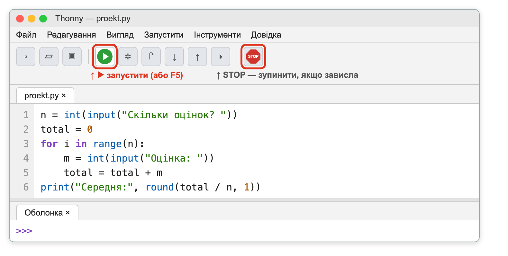
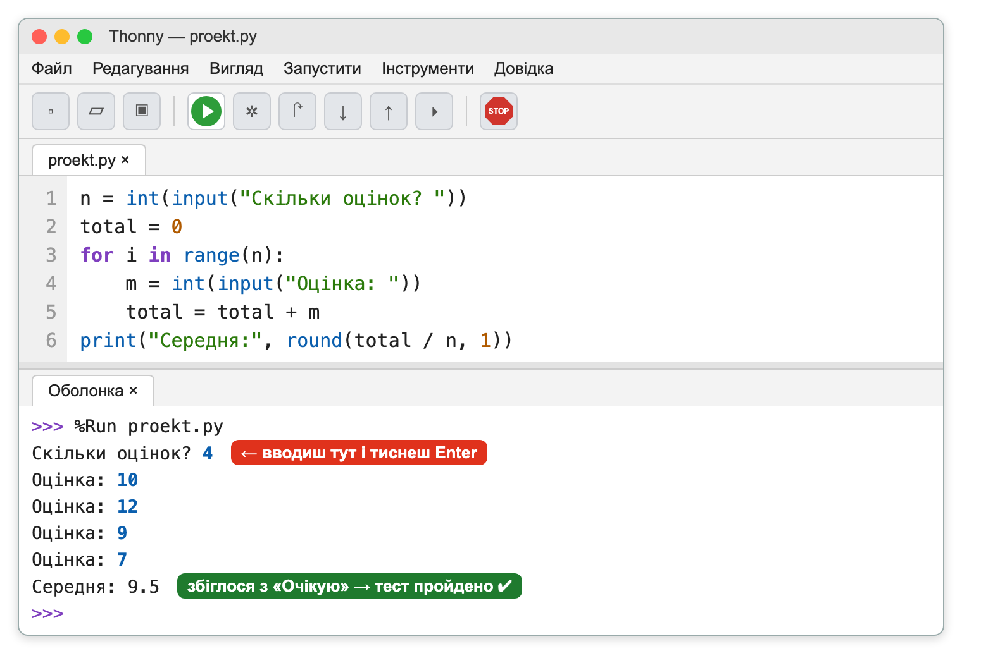

Сьогодні: доробляєш рівні 2–3, тестуєш програму в Thonny і виправляєш помилки.
Відкрий свій proekt.py. Перевір, що рівень 1 працює. Далі — рівень 2, потім ★. Умови рівнів — на сторінці «Свій проєкт: ідея і перша версія».
Як 12.11: перевіряємо чотири групи вхідних даних — прямо в Thonny. Запускаєш програму, вводиш дані з таблиці й дивишся: що ввів → що очікую → що вийшло.
Крок 1. Відкрий proekt.py у Thonny і натисни зелену кнопку ▶ (або клавішу F5). Якщо програма зависла — червона кнопка STOP.

Крок 2. Унизу, в «Оболонці», вводь дані з таблиці й тисни Enter. Порівняй, що вийшло, з колонкою «Очікую». Збіглося — тест пройдено ✔.

| Група | Калькулятор оцінок | Очікую | Обмінник | Очікую |
|---|---|---|---|---|
| Звичайні | 4 оцінки: 10, 12, 9, 7 | Середня: 9.5 | 1, 415 грн | Доларів: 10.0 |
| Граничні | 1 оцінка: 12 | Середня: 12.0, високий | 1, 0 грн | Доларів: 0.0 |
| Неправильні | оцінка 13 | «Такої оцінки немає» (★) | пункт 7 | «Немає такого пункту» |
| Особливі | 0 оцінок | не має «впасти» | сума «сто» | не має «впасти» |
Перевір останній рядок у своїй програмі. Калькулятор з 0 оцінок «впаде» з ZeroDivisionError: ділимо на 0. Це і є знахідка тестування — як виправити, дивись нижче, помилка 2.
Кожну помилку можна спіймати самому. У Thonny: Файл → Новий, набери короткий код, натисни ▶ і введи те, що написано. Побачиш помилку, як на скріні. Потім виправ код і запусти знову.
Червоний текст — не страшно. Читай останній рядок: там назва помилки. Трохи вище, після line, — номер рядка, де вона сталася.
ValueErrorЯк отримати: набери код, натисни ▶ і введи сто.
mark = int(input("Оцінка: "))
print("Твоя оцінка:", mark)Чому: int() перетворює на число тільки цифри. «сто» — це літери.
Як виправити: питати знову, поки не введуть цифри (докладно — у розділі 4, покращення А).
s = input("Оцінка: ")
while not s.isdigit():
print("Треба ввести число")
s = input("Оцінка: ")
mark = int(s)
print("Твоя оцінка:", mark)Тепер на «сто» програма каже «Треба ввести число» і питає ще раз.
ZeroDivisionErrorЯк отримати: набери калькулятор, натисни ▶ і на питання «Скільки оцінок?» введи 0.
n = int(input("Скільки оцінок? "))
total = 0
for i in range(n):
m = int(input("Оцінка: "))
total = total + m
print("Середня:", round(total / n, 1))Чому: оцінок 0, і в рядку 6 ділимо total / n, тобто на 0. На 0 ділити не можна.
Як виправити: перед діленням перевірити, чи n не 0.
n = int(input("Скільки оцінок? "))
total = 0
for i in range(n):
m = int(input("Оцінка: "))
total = total + m
if n == 0:
print("Немає оцінок")
else:
print("Середня:", round(total / n, 1))Тепер на 0 програма пише «Немає оцінок», а на 4 оцінки — як раніше, 9.5.
Як отримати: набери код і натисни ▶. Одиниці біжать без кінця — зупини червоною кнопкою STOP.
n = 1
while n <= 5:
print(n)Чому: у циклі n не змінюється, завжди 1. Умова n <= 5 завжди правда — цикл ніколи не закінчиться.
Як виправити: усередині циклу збільшувати n.
n = 1
while n <= 5:
print(n)
n = n + 1Тепер друкує 1 2 3 4 5 і зупиняється.
Як отримати: набери код, натисни ▶ і введи Камінь з великої букви.
p = input("Камінь, ножиці чи папір? ")
if p == "камінь":
print("Ти обрав камінь")
else:
print("Не знаю такого")Чому: для Python «К» і «к» — різні букви, тому «Камінь» ≠ «камінь».
Як виправити: перетворити введене на малі букви: .lower() у кінці рядка з input.
p = input("Камінь, ножиці чи папір? ").lower()
if p == "камінь":
print("Ти обрав камінь")
else:
print("Не знаю такого")Тепер «Камінь», «КАМІНЬ» і «камінь» працюють однаково.
Як отримати: набери код, натисни ▶ і тричі введи правильну відповідь 4.
for i in range(3):
score = 0
a = int(input("2 + 2 = "))
if a == 4:
score = score + 1
print("Правильних:", score)Чому: score = 0 стоїть усередині циклу: на кожному кроці рахунок обнуляється.
Як виправити: перенести score = 0 над цикл, без відступу.
score = 0
for i in range(3):
a = int(input("2 + 2 = "))
if a == 4:
score = score + 1
print("Правильних:", score)Тепер після трьох правильних — «Правильних: 3».
IndentationErrorЯк отримати: набери код без пробілів перед print і натисни ▶.
for i in range(3):
print("Привіт")Чому: після for, while, if, else рядки всередині мають бути з відступом.
Як виправити: поставити курсор перед print і натиснути Tab (4 пробіли).
for i in range(3):
print("Привіт")Тепер тричі друкує «Привіт».
Якщо рівні готові і всі тести проходять, вибери одне покращення. Нижче — по кроках, на прикладі калькулятора оцінок. У твоїй програмі все так само, тільки свої рядки.
Що буде: замість червоної помилки програма каже «Треба ввести число» і питає знову. Підходить усім, де вводять числа.
int(input(...)). У калькуляторі це m = int(input("Оцінка: ")).int: s = input("Оцінка: ").while not s.isdigit(): — «поки в s не самі цифри». Усередині, з відступом: print("Треба ввести число") і знову s = input("Оцінка: ").m = int(s).for? Тоді всі нові рядки теж мають відступ, як на прикладі.десять — має попросити ще раз; введи 10 — рахує далі.Було → стало (нові рядки 4–8):
n = int(input("Скільки оцінок? "))
total = 0
for i in range(n):
s = input("Оцінка: ")
while not s.isdigit():
print("Треба ввести число")
s = input("Оцінка: ")
m = int(s)
total = total + m
print("Середня:", round(total / n, 1))Що буде: після кінця програма питає «Ще раз?». Відповів «так» — усе спочатку, без кнопки ▶. «ні» — «До побачення!».
import random — під ним) допиши два рядки: again = "так" і while again == "так":again = input("Ще раз? (так/ні) ").lower()print("До побачення!")так — програма починається знову; ні — прощається..lower() — щоб «Так» і «так» спрацювали однаково.
again = "так"
while again == "так":
n = int(input("Скільки оцінок? "))
total = 0
for i in range(n):
m = int(input("Оцінка: "))
total = total + m
print("Середня:", round(total / n, 1))
again = input("Ще раз? (так/ні) ").lower()
print("До побачення!")Що буде: на прощання програма пише, скільки разів ти грав або рахував. Робиться після покращення Б.
games = 0 — поки 0 разів.games = games + 1 — ще один раз.print("Порахували разів:", games)Для гри можна написати "Ігор зіграно:".
games = 0
again = "так"
while again == "так":
n = int(input("Скільки оцінок? "))
total = 0
for i in range(n):
m = int(input("Оцінка: "))
total = total + m
print("Середня:", round(total / n, 1))
games = games + 1
again = input("Ще раз? (так/ні) ").lower()
print("Порахували разів:", games)Впиши відповідь і натисни «Перевірити» або Enter. Перевірити можна лише один раз.
Обов'язкового немає. Хочеш — доробляй проєкт удома, якщо є комп'ютер. Файл proekt.py має бути на комп'ютері в класі або на флешці.